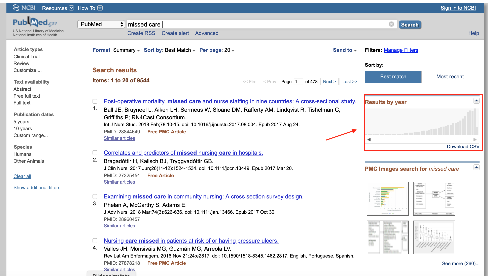

Catherine Blatter
home
about
posts
Categories
All
(6)
RISmed
(1)
purrr
(1)
Different approaches to rename variables
This was usually a rather small post with snippets but turned out to be much more interesting…
Feb 24, 2022
Cath Blatter
An (ever growing) list of random things in R
This post should really just be a random list of things that R can do but I often forget about….
Jan 27, 2022
Cath Blatter
Installing & using multiple R versions aside
I started using the {renv}-package about a year ago and it has saved me multiple times already. What always baffled me though was…
Mar 6, 2021
Cath Blatter
Using tidyr::pivot_longer() and regex for data wrangling
This code shows you how you can effectively wrangle your dataframe from wide to long using
tidyr::pivot_longer()
comb…
Mar 16, 2020
Cath Blatter
Using purrr::map() to identify available datasets in a list
purrr
Recently I wanted to explore plotting R for the first time and discovered the ggswissmaps-package.
Nov 28, 2019
Cath Blatter

Getting PubMed metadata with RISmed directly into RStudio
RISmed
For my master’s thesis (stay tuned 😎) I came at a point where I was interested in having a closer look at publication meta data (e.g. publications per year)
Apr 29, 2019
Catherine Blatter
No matching items